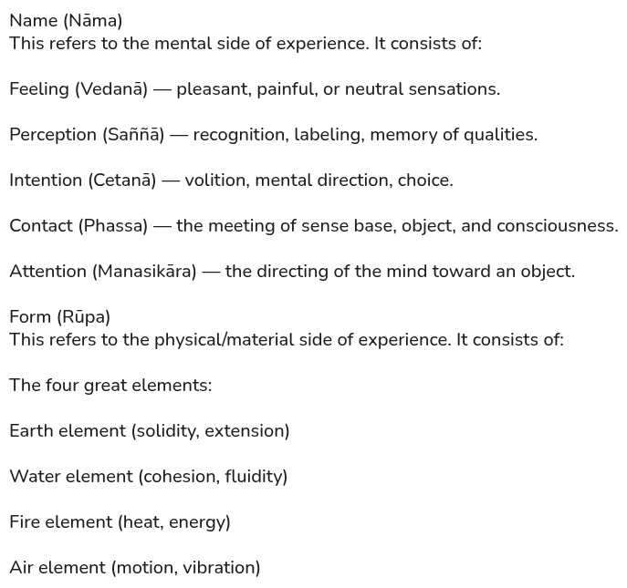
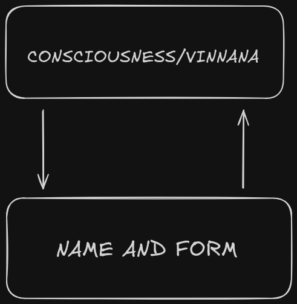

Translated with Claude Sonnet 4.5 • May contain minor inaccuracies
බුද්ධ ශාසනයේ මූලික ඉගැන්වීම්
චතුරාර්ය සත්යයන්
බුදුරජාණන් වහන්සේ තම ඉගැන්වීම් චතුරාර්ය සත්යයන්ගෙන් ආරම්භ කළ අතර, ඒවා මාර්ගයේ පදනම වේ:
- දුක්ඛ ආර්ය සත්යය (දුක්ඛය): සියලු සංස්කාර කරන ලද පැවැත්ම දුක්ඛයෙන් සලකුණු කෙරේ. උපත, ජරාව, වෙදනාව, මරණය, ශෝකය, විලාපය, වේදනාව, දුක් සිත, සහ බලාපොරොත්තු සුන්වීම දුක්ඛයයි. සැප පවා දුක්ඛයයි මන්ද ඒවා අනිත්ය සහ විශ්වාස කළ නොහැකි බැවිනි.
- දුක්ඛ සමුදය ආර්ය සත්යය: තෘෂ්ණාව (taṇhā) හේතුවයි. කාම තෘෂ්ණාව, භව තෘෂ්ණාව, සහ විභව තෘෂ්ණාව යන තුන සංසාර චක්රය පවත්වා ගෙන ගොස් දුක්ඛය සදාකාලිකව පවත්වයි.
- දුක්ඛ නිරෝධ ආර්ය සත්යය: තෘෂ්ණාව අත්හැරිමෙන් දුක්ඛය නැවතේ. මෙම නිරෝධය නිර්වාණයයි, උපත හා මරණයෙන් ඔබ්බට ගිය අසංස්කෘත තත්ත්වයයි.
- දුක්ඛ නිරෝධගාමිනී ප්රතිපදා ආර්ය සත්යය: ආර්ය අෂ්ටාංගික මාර්ගය නිරෝධය කරා මඟ පෙන්වයි. එය සමන්විත වන්නේ:
- සම්මා දිට්ඨිය
- සම්මා සංකල්පය
- සම්මා වාචාව
- සම්මා කම්මන්තය
- සම්මා ආජීවය
- සම්මා වායාමය: කුශල ධර්ම වර්ධනය කිරීම, අකුශල ධර්ම පහ කිරීම.
- සම්මා සතිය: කාය, වේදනා, චිත්ත, සහ ධර්ම පිළිබඳ පැහැදිලි දැනුවත්භාවය.
- සම්මා සමාධිය: භාවනා අවශෝෂණය (jhāna) වර්ධනය කිරීම.
පඤ්ච උපාදානස්කන්ධයෝ
බුදුරජාණන් වහන්සේ මානව ස්වභාවය පඤ්ච උපාදානස්කන්ධ (khandhas) වලට විශ්ලේෂණය කළ අතර, ඒවා එකට "පුද්ගලයා" ලෙස අප හඳුන්වන දේ සමන්විත කරයි:
- රූපය (Rūpa): භෞතික ශරීරය සහ ද්රව්යමය සංසිද්ධීන්.
- වේදනාව (Vedanā): සුඛ, දුක්ඛ, හෝ උපේක්ෂා සංවේදනයන්.
- සංඥාව (Saññā): අත්දැකීම් හඳුනා ගැනීම සහ ලේබල් කිරීම.
- සංස්කාරයෝ (Saṅkhārā): අභිසංස්කාර ක්රියාකාරකම්, චිත්ත සංස්කාර, චේතනා.
- විඤ්ඤාණය (Viññāṇa): ඉන්ද්රිය සහ මානසික විෂයයන් පිළිබඳ දැනුවත්භාවය.
බුදුරජාණන් වහන්සේ ඉගැන්වූයේ මෙම ස්කන්ධ කිසිවක් ආත්මයක් නොවන බවයි. ඒවා අනිත්ය, දුක්ඛ, සහ "මම" හෝ "මගේ" ලෙස සැලකිය යුතු නොවේ. SN 22.59 (අනත්ත-ලක්ඛණ සූත්රය) හි, ඔහු ශිෂ්යයන්ට එක් එක් ස්කන්ධය "මේ මගේ නොවේ, මේ මම නොවෙමි, මේ මගේ ආත්මය නොවේ" ලෙස දැකීමට උපදෙස් දුන්නේය.
විඤ්ඤාණය සහ නාම-රූප චක්රය


ප්රතීත්ය සමුත්පාදය (SN 12.2) තුළ, විඤ්ඤාණය සහ නාම-රූප (nāma-rūpa) එකිනෙකා සඳහා හේතු වේ. විඤ්ඤාණයට ප්රකාශ වීමට නාම-රූප අවශ්ය වන අතර, නාම-රූපයට ක්රියා කිරීමට විඤ්ඤාණය අවශ්ය වේ. මෙම අන්යෝන්ය පරායත්තතාව පෙන්වන්නේ ස්වාධීන ආත්මයක් නොමැති බවත්, සංස්කාර ක්රියාවලීන් පමණක් ඇති වී නැති වන බවත්ය. බුදුරජාණන් වහන්සේ අවධාරණය කළේ මෙම චක්රය පැහැදිලිව දැකීම ස්ථිර "මම" යන මායාව විනාශ කරන බවයි.
කර්මය: චේතනාවේ නියාමය
කර්මය යනු "ඉරණම" හෝ "විශ්වීය යුක්තිය" නොවේ. එය විශේෂයෙන් චේතනාව (Cetanā) ලෙස අර්ථ දක්වා ඇත. බුදුරජාණන් වහන්සේ කර්මය ඔහුගේ කාලයේ වූ චාරිත්රානුකූල ක්රියාවෙන් වර්තමානයේ මානසික ක්රියාව දක්වා නැවත අර්ථ දැක්වීය. නිබ්බේධික සූත්රය (AN 6.63) හි, ඔහු ප්රකාශ කරයි: "චේතනාව, මම ඔබට කියමි, කර්මයයි." එය නාම සහ රූප චක්රය තුළ ඇති "ධාවන බලය" වේ.
- බීජය ලෙස චේතනාව: සිතින්, වචනයෙන්, හෝ ශරීරයෙන් සිදු කරන සෑම අභිසංස්කාර ක්රියාවක්ම විඤ්ඤාණ ක්ෂේත්රයේ රෝපණය කරන ලද බීජයකි.
- ඵලය (විපාක): කර්මය යනු ක්රියාවයි; විපාක යනු ඵලයයි. ඵලයන් "දඬුවම්" නොවේ, ඒවා මුල් චේතනාවේ ගුණාත්මකභාවයේ ස්වභාවික පැසවීමයි.
- "චක්රය" සම්බන්ධතාව: කර්මය යනු විඤ්ඤාණ චක්රය කරකැවෙන සංස්කාරය (Saṅkhāra) ය. අකුශල චේතනා (ලෝභ, ද්වේෂ, මෝහ මුල් කරගත්) "බරපතල" ක්ෂණික රූප නිර්මාණය කර බන්ධනය වැඩි කරයි. කුශල චේතනා (අලෝභ, අද්වේෂ, අමෝහ මුල් කරගත්) චක්රය "සැහැල්ලු" කරයි.
- කර්මයේ අවසානය: මාර්ගයේ අවසාන අරමුණ "හොඳ කර්මය" නොව කර්මයේ නිරෝධයයි. නිර්මල සිතින් සහ ග්රහණයකින් තොරව (විදර්ශනාව) ක්රියා කිරීමෙන්, භාවනා කරන්නා නව බීජ රෝපණය නවත්වයි, අවසානයේ සම්පූර්ණ චක්රය ඉන්ධන අවසන් වීමට හේතු කරයි.
අනත්තය (ආත්මයක් නැත)
බුදුරජාණන් වහන්සේගේ විප්ලවීය අවබෝධය වූයේ ස්ථිර, නොවෙනස්වන ආත්මයක් නොමැති බවයි. ස්කන්ධයෝ සංස්කාර කරන ලද, අනිත්ය, සහ දුක්ඛ වේ. ඒවාට "මම" හෝ "මගේ" ලෙස ඇලී සිටීම ආත්මය පිළිබඳ මායාව නිර්මාණය කර දුක්ඛය සදාකාලිකව පවත්වයි. සියලු ධර්ම අනත්ත බව පැහැදිලිව දැකීම නිබ්බිදාව (nibbidā), විරාගය (virāga), සහ විමුක්තිය (nibbāna) කරා යොමු කරයි.
නිරීක්ෂණ ක්රමය
මහාසතිපට්ඨාන සූත්රය (DN 22) හි බුදුරජාණන් වහන්සේ ආත්මයේ මායාව විසංයෝජනය කිරීම සඳහා මානසික හා භෞතික සිදුවීම්ගේ ගලා යාම නිරීක්ෂණය කිරීමේ ප්රොටෝකෝලය සපයයි:
- ඇතිවීම (උප්පත්තිය): සිදුවීමක් පැවැත්මට ගෙන එන හේතු දැකීම.
- නැතිවීම (වය): සිදුවීම ඇති වූ වහාම විනාශ වන ආකාරය දැකීම.
- ඇතිවීම හා නැතිවීම: මුළු ක්රියාවලියේම ඉහළ වේගයෙන්, කාලාන්තරයෙන් සිදුවන ස්වභාවය දැකීම.
මෙය "ලෝකයේ කිසිවකට ඇලී නොසිටිමින් ස්වාධීනව" වාසය කරමින් සිදු කෙරේ. මෙය තත්කාලීනව විරාගය (dispassion) ක්රියාත්මක කිරීමයි. "රූපය" වෙනුවට "දැල්වීම" නිරීක්ෂණය කිරීමෙන් මනසට ග්රහණය කළ හැකි ස්ථිර මූලයක් නොමැති බව අවබෝධ වේ. මෙය ක්රමානුකූලව නිබ්බිදාව (nibbidā), විරාගය (virāga), සහ නිර්වාණය (nibbāna) කරා යොමු කරයි.
බුදුවීමේ ස්වාභාවික ගලා යාම
බුදුරජාණන් වහන්සේ විස්තර කළේ බුදුවීම යනු තනි ශක්ති බලයෙන් බලහත්කාරයෙන් ඇති කරන දෙයක් නොව නිවැරදි තත්ත්වයන් ලබා දීමේ ස්වාභාවික ප්රතිඵලය බවයි.
- AN 11.2 (චේතනාකරණීය සූත්රය): එක් සාධකයක් තිබේ නම්, ඊළඟ එක ස්වාභාවිකව ධර්මතාවයෙන් (dhammatā) පැන නඟී. ශීලය අනුතාපයේ නොමැතිකම කරා යොමු කරයි, එය ප්රමෝදය කරා, එය සන්සුන්භාවය කරා, එය සමාධිය කරා යොමු කරයි.
- SN 12.23 (උපනිස සූත්රය): බුදුරජාණන් වහන්සේ කන්දකින් ඇළට, පොකුණුවලට, විලට, සහ අවසානයේ සාගරයට වර්ෂාව ගලා යන උපමාව භාවිත කළේය. එලෙසම සතිය සහ විචාර විමර්ශනය ස්වාභාවිකව විමුක්තිය කරා ගලා යයි.
- වේලිය ලෙස ග්රහණය: උපාදානය (upādāna) මෙම ස්වාභාවික ගලා යාම අවහිර කරයි. ග්රහණය අත්හළ විට, මනස බාධාවකින් තොරව සාමය කරා ගමන් කරයි.
- ප්රායෝගික අවබෝධය: ස්කන්ධයෝ අනිත්ය සහ අනත්ත බව දැකීම අනන්යතාවයේ වේලිය දුර්වල කරයි. එවිට මනස ස්වාභාවිකව සමාධිය සහ විදර්ශනාව තුළට ගලා යයි.
චතුර්ථ ධ්යානයන්
බුදුරජාණන් වහන්සේ ධ්යාන අවශෝෂණයේ අදියර හතරක් (jhāna) කරා මඟ පෙන්වන සමාධිය වර්ධනය කිරීමේ භාවනාව ඉගැන්වීය. මේවා තමන් විසින්ම අරමුණු නොව විදර්ශනාව සඳහා බලවත් ආධාරක වේ:
- පඨම ධ්යානය: කාමයන්ගෙන් සහ අකුශල ධර්මවලින් හුදකලාව. විතර්ක සහ විචාර, ප්රීති, සහ හුදකලාවෙන් උපන් සැප මගින් සලකුණු කෙරේ.
- දුතිය ධ්යානය: විතර්ක සහ විචාරයේ සන්සුන්භාවයත් සමඟ, ප්රීති සහ සැප රැඳී තිබෙන අතර, අභ්යන්තර සන්සුන්භාවය සහ මනසේ එකමුතුව ඇත.
- තතිය ධ්යානය: ප්රීති මැකී යයි, උපේක්ෂාව සහ සතිය ඉතිරි වන අතර, සැප තවමත් පවතී.
- චතුර්ථ ධ්යානය: පිරිසිදු උපේක්ෂාව සහ සතිය, සැප හෝ වේදනාව නොමැතිව.
ඔබට නිතරම වෙන්වූ අභ්යාසයක් ලෙස ධ්යානය "කිරීමට" අවශ්ය නැත. ඔබ නොපසුබට ලෙස "නාම-රූප" චක්රය විසංයෝජනය කරන්නේ නම්, මනස අවසානයේ ධ්යානයට "වැටෙනු" ඇත මන්ද එයට යාමට වෙනත් තැනක් නැත. බුදුරජාණන් වහන්සේ මෙය "ස්වාභාවික නියාමය" (Dhammatā) ලෙස හැඳින්වීය - මනස පඤ්ච උපාදානස්කන්ධයන් විසින් උත්තේජනය කරන ලද 'ආත්මය'/ක්ෂණික රූප මත ග්රහණය නවත්වන විට ස්වාභාවිකව සන්සුන්භාවය කරා ගලා යයි.
විදර්ශනාව සඳහා වැදගත්කම
ධ්යානය මනස ස්ථිර කරයි, එය පැහැදිලි සහ සමාධිමත් කරයි. මෙම ස්ථායීතාව අනිත්යතාවය, දුක්ඛය, සහ අනත්තතාවය පිළිබඳ විදර්ශනයට ඉඩ සලසයි. ගැඹුරු අවශෝෂණයකින් තොරව විදර්ශනාව පැන නැඟිය හැකි නමුත්, ධ්යානයන් යථාර්ථයේ ස්වභාවය විනිවිද දැකීම සහ විමුක්තිය සාක්ෂාත් කර ගැනීම සඳහා බලවත් පදනමක් සපයයි. බුදුරජාණන් වහන්සේ නිරන්තරයෙන් අවධාරණය කළේ සමාධිය සහ විදර්ශනාව එකට ක්රියා කරන බවයි: සමාධිය මනස ස්ථිර කරයි, විදර්ශනාව එය විමුක්ත කරයි.
සංයෝජන ඉවත් කිරීම (සංයෝජන)
විමුක්තිය යනු විඤ්ඤාණය පුනර්භවයේ චක්රයට බඳින සංයෝජන දහය ක්රමානුකූලව කපා දැමීමයි:
- සක්කාය දිට්ඨිය (Sakkāya-diṭṭhi): පඤ්ච උපාදානස්කන්ධයන්ගෙන් එකක් ස්ථිර "ආත්මයක්" සමන්විත කරන බවට වූ වැරදි මතය.
- විචිකිච්ඡාව (Vicikicchā): බුදුරජාණන් වහන්සේගේ යථාර්ථයේ සිතියම සහ මාර්ගයේ ඵලදායීතාවය පිළිබඳ අවිනිශ්චිතභාවය.
- ශීලව්රත පරාමාසය (Sīlabbata-parāmāsa): බාහිර චාරිත්ර හෝ නීතිරීතිය පමණක් බුදුවීමට මඟ පෙන්විය හැකි බවට වූ විශ්වාසය.
- කාමච්ඡන්දය (Kāmacchando): ඉන්ද්රිය ෂඩායතන හරහා සැප සඳහා බලහත්කාර තල්ලුව.
- ව්යාපාදය (Byāpādo/Vyāpādo): පිළිකුල්, කෝපය, හෝ සතුරුකමේ මානසික ප්රතික්රියාව.
- රූප රාගය (Rūpa-rāgo): පිරිපහදු වූ, ද්රව්යමය පැවැත්මේ තත්ත්වයන්ට (පළමු ධ්යාන හතර වැනි) ඇලීම.
- අරූප රාගය (Arūpa-rāgo): සියුම්, භෞතික නොවන විඤ්ඤාණ තත්ත්වයන්ට ඇලීම.
- මානය (Māna): ගැඹුරට වැදී ඇති, ප්රතිචක්රීය "මම" සැසඳීම - ආත්මයේ සියුම් "සුවඳ".
- උද්ධච්චය (Uddhacca): මනස තුළ අවසාන, සියුම් කැළඹීම හෝ "දැල්වීම".
- අවිද්යාව (Avijjā): සෑම මොහොතකම චතුරාර්ය සත්යයන් නොදැකීමේ මූලික අසමත්භාවය.
විමුක්ති අවස්ථා
මාර්ගය මෙම සංයෝජන නිශ්චිත, ආපසු හැරවිය නොහැකි අනුපිළිවෙලකින් විසංයෝජනය කරයි:
- සෝතාපන්නය (Sotāpanna): පළමු සංයෝජන තුන සම්පූර්ණයෙන් කපා දමයි. ඝන "මම" යන මායාව බිඳ දමනු ලැබේ.
- සකදාගාමී (Sakadāgāmin): 4 වන සහ 5 වන සංයෝජන (කාම තෘෂ්ණාව සහ ව්යාපාදය) සැලකිය යුතු ලෙස දුර්වල කරයි.
- අනාගාමී (Anāgāmin): 4 වන සහ 5 වන සංයෝජන සම්පූර්ණයෙන් ඉවත් කරයි; මනස තවදුරටත් රාගය මගින් ඇද ගැනීමට හෝ කෝපය මගින් තල්ලු කිරීමට නොහැකි වේ.
- අරහත් (Arahant): ඉතිරි ඉහළ සංයෝජන පහ (6–10) මුළුමනින් විනාශ කරයි. අවිද්යාවේ මූලය උදුරා දමනු ලබන අතර, පුනර්භවයේ චක්රය ස්ථිරවම නතර වේ.
නිගමනය
මෙම ඉගැන්වීම් එකට සුසංයෝගී මාර්ගයක් සාදයි: දුක්ඛය අවබෝධ කර ගැනීම, ස්කන්ධයෝ හරහා දැකීම, අනත්තතාවය අවබෝධ කර ගැනීම, සහ නිර්වාණයට ළඟා වීම සඳහා සමාධිය සහ විදර්ශනාව වර්ධනය කිරීම.